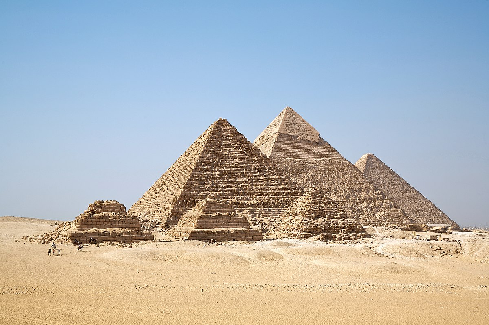
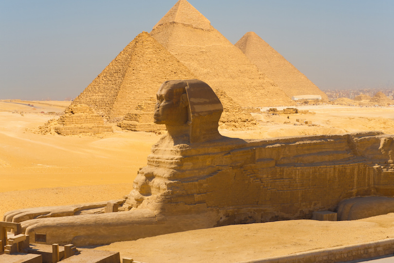

Pyramids of Giza

Arguably the world’s most famous landmark, the Pyramids of Giza lie on the outskirts of Cairo, looking out over the endless sands of the Sahara. The pyramids in Giza were built over the span of three generations – by Khufu, his second reigning son Khafre, and Menkaure. The Great Pyramid of Khufu is the oldest and sole remnant of the Seven Wonders of the Ancient World.
Great Sphinx

Located at the Giza Plateau, The Great Sphinx is one of the largest and oldest monuments in the world, but basic facts about it, such as who was the model for the face, when it was built, and by whom, are still debated. It is the largest monolith statue in the world although it is considerably smaller than the Pyramids around it. Despite conflicting evidence and viewpoints over the years, the traditional view held by modern Egyptologists at large remains that the Great Sphinx was built in approximately 2500 BC by the pharaoh Khafre, the supposed builder of the second pyramid at Giza.